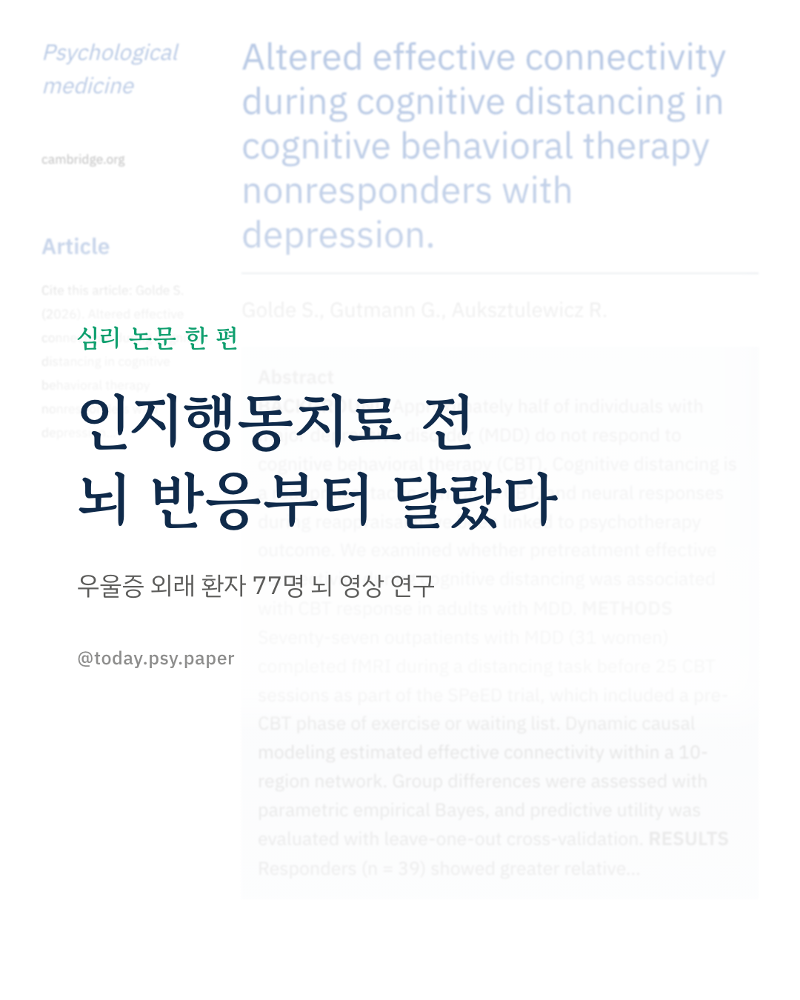
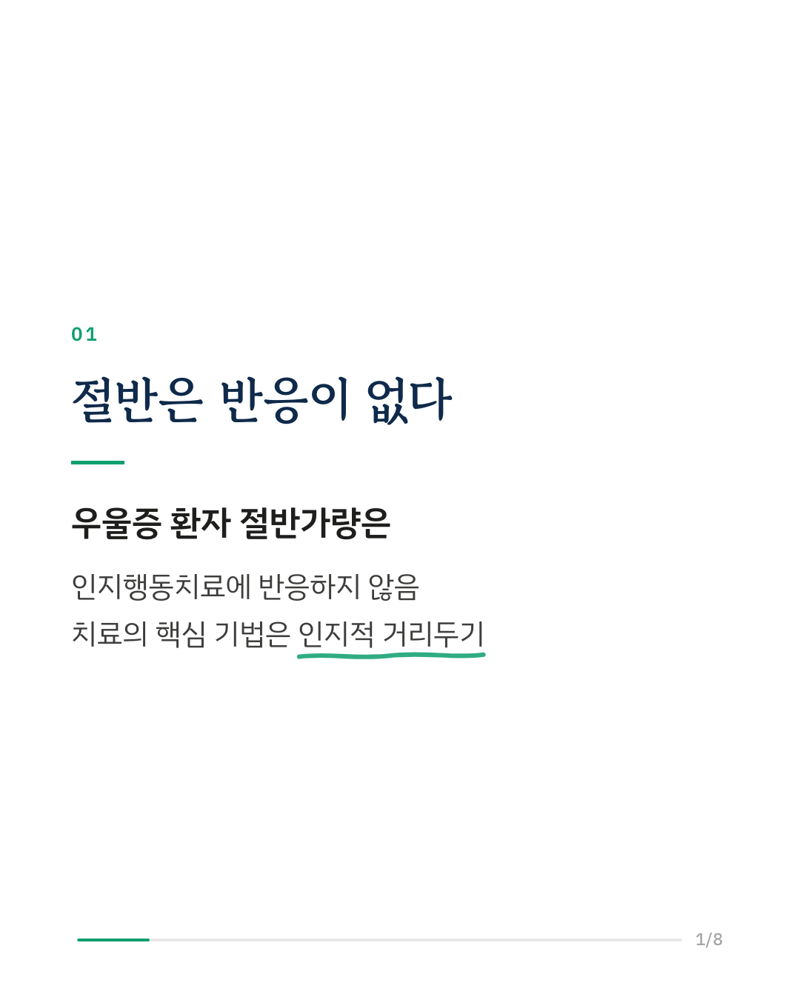
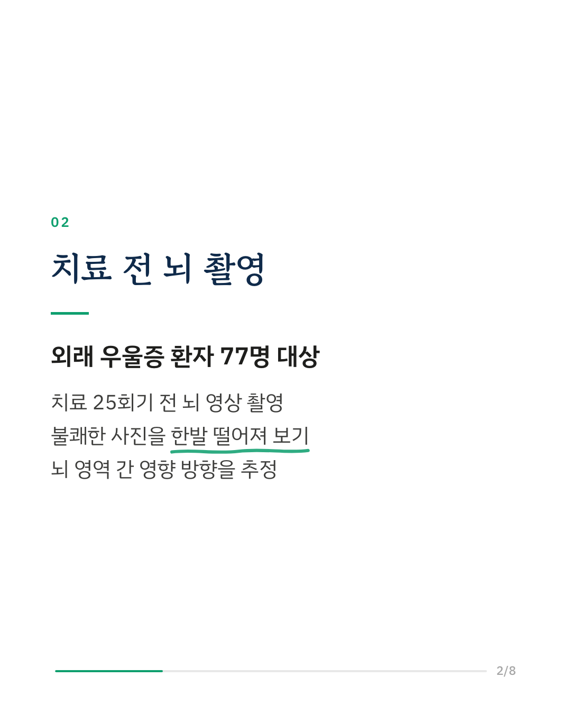
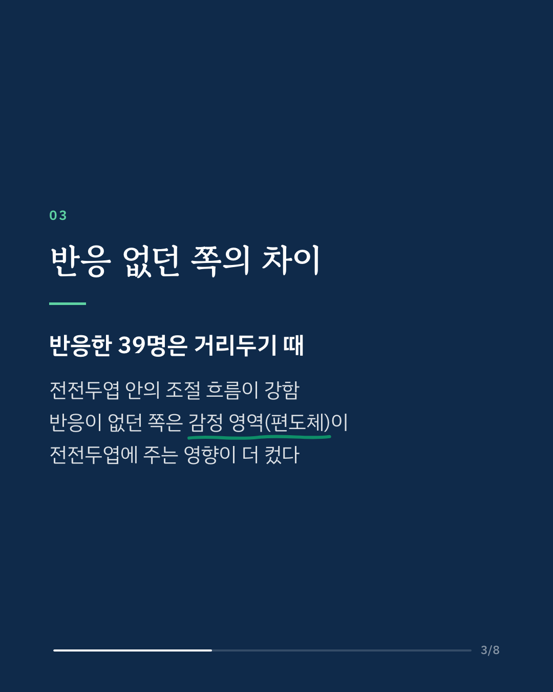
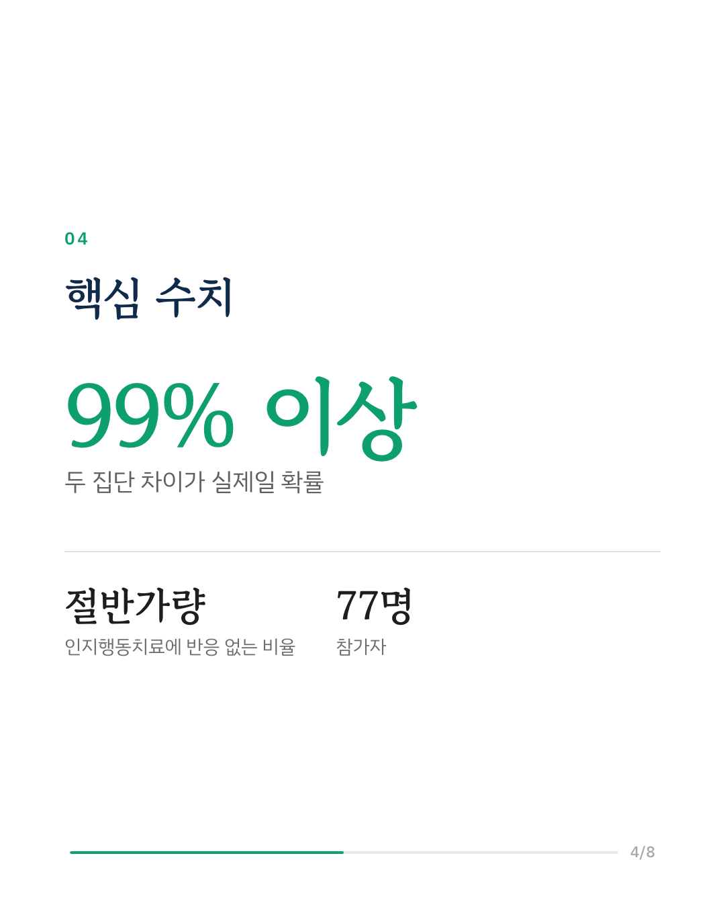
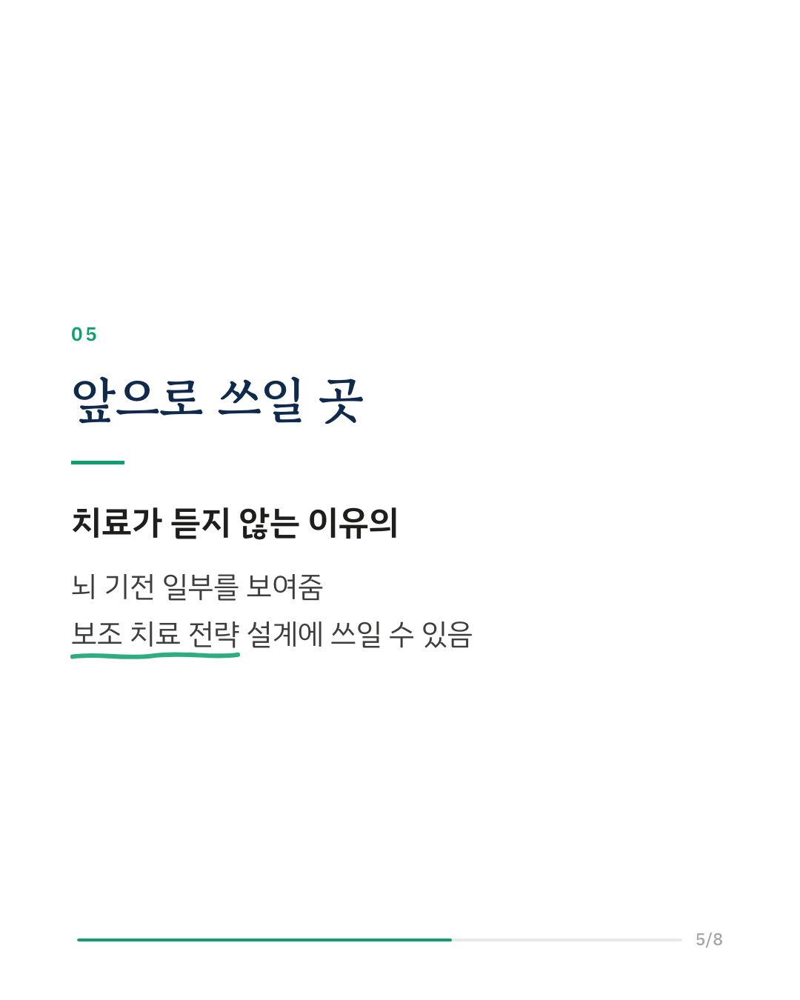
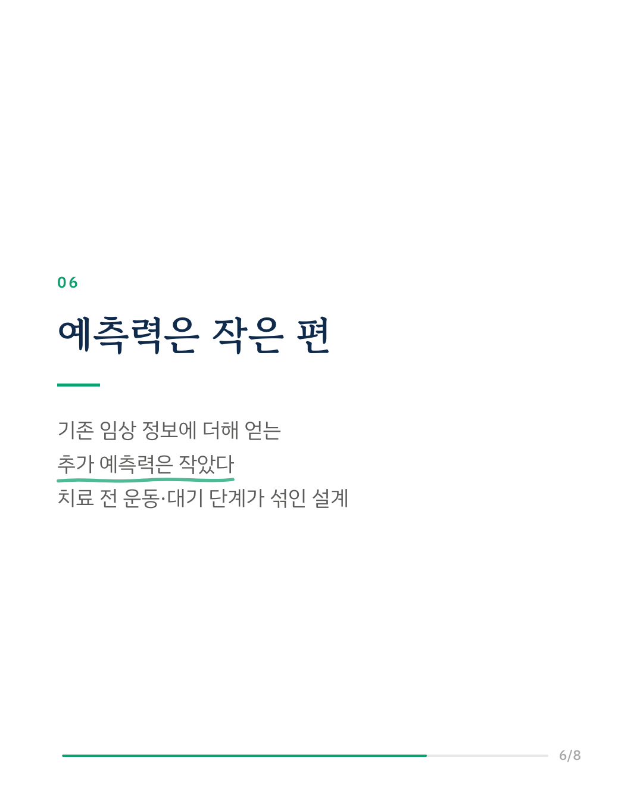
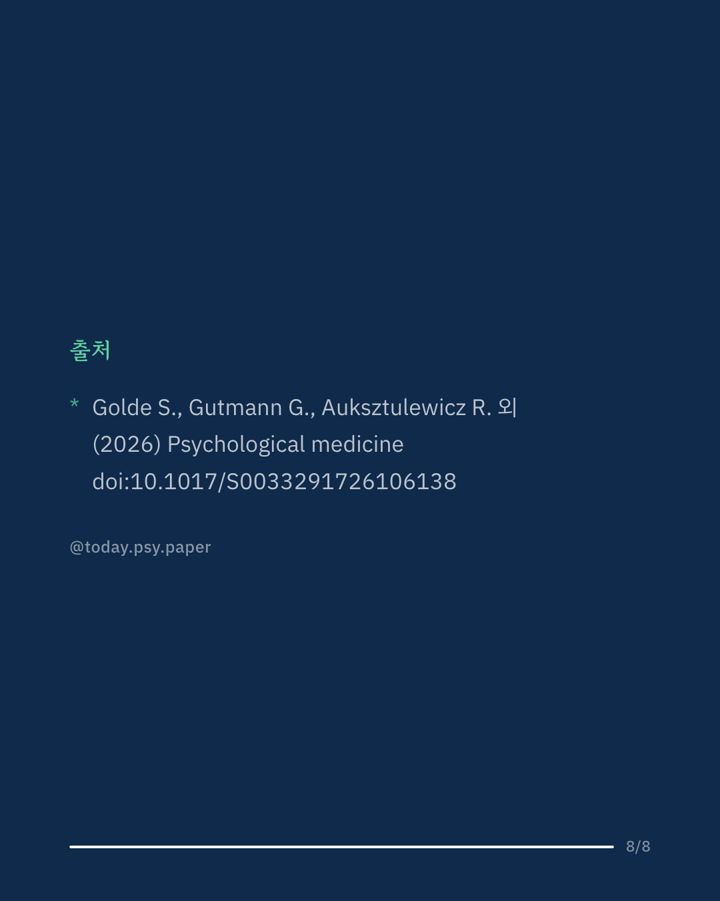

우울증 환자의 절반가량은 인지행동치료를 받아도 증상이 충분히 나아지지 않습니다. 이 연구는 치료를 시작하기 전의 뇌 반응으로 그 차이를 설명할 수 있는지 살펴봤습니다. 외래 우울증 환자 77명이 25회기 인지행동치료를 받기 전, 불쾌한 사진을 한발 떨어져 바라보는 '인지적 거리두기' 과제를 하며 뇌 영상을 찍었습니다. 치료에 반응한 39명은 거리두기를 할 때 전전두엽 안에서 조절 신호가 이어지는 흐름이 강했습니다. 반응하지 않은 사람들은 감정 처리 영역인 편도체가 전전두엽에 주는 영향이 상대적으로 컸습니다. 연구진은 이 패턴이 인지적 개입으로 증상이 덜 나아지는 기전과 관련 있을 수 있다고 말합니다. 다만 뇌 영상의 예측력은 작은 편이었고, 기존 임상 정보에 더해 얻는 예측 이득도 크지 않았습니다. 출처: Psychological Medicine (2026), 'Altered effective connectivity during cognitive distancing in cognitive behavioral therapy nonresponders with depression' DOI: 10.1017/S0033291726106138 #임상심리 #정신건강정보 #심리학연구 #논문리뷰 #우울증 #인지행동치료 #뇌과학 #심리치료
python3 publish.py 43001504